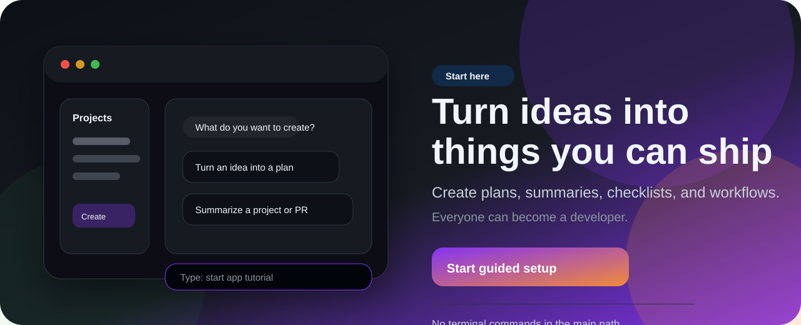
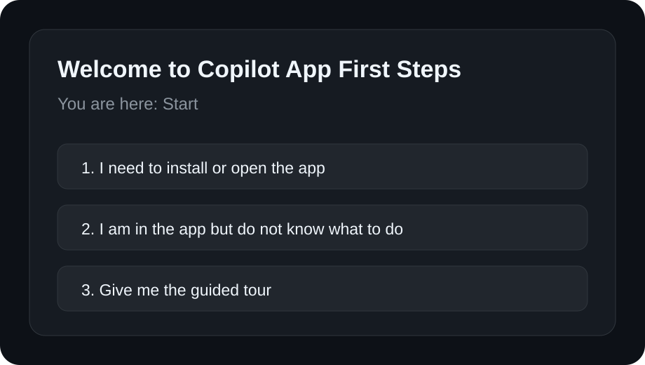
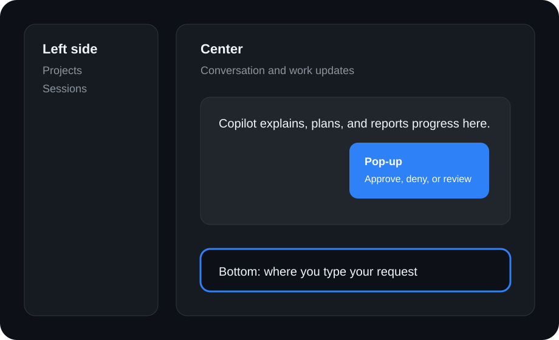
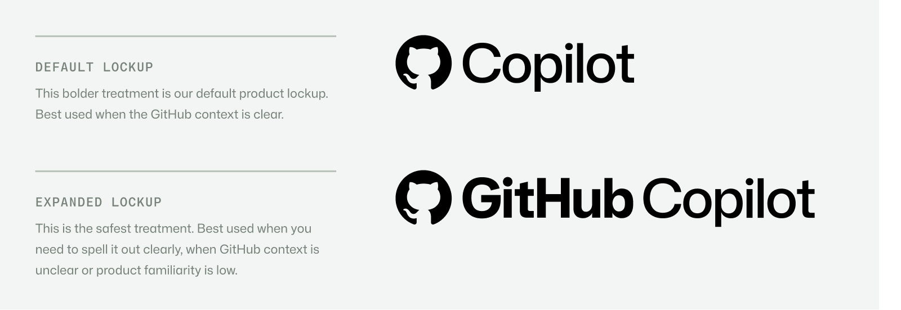

1
Create useful work first
Draft a status update, summarize a project, turn an issue into steps, or explain a PR in plain English.
Copilot App First Steps helps non-technical users understand the value of the GitHub Copilot app by creating something useful right away: a plan, a summary, a status update, an issue breakdown, a PR explanation, or a first project workflow. Everyone can become a developer.

The tutor starts from the learner's goal: "What can I make with this?" Then it shows how the app helps turn plain-language intent into useful work without requiring Git, terminal, or code knowledge first.
Draft a status update, summarize a project, turn an issue into steps, or explain a PR in plain English.
The first win comes before the vocabulary lesson. Concepts are explained only when they help the learner create.
The message is simple: you do not need to start as a developer to begin thinking and creating like one.
Every step connects the app to a concrete outcome the learner can create.
The design follows GitHub's Copilot brand direction: mostly neutral GitHub surfaces, Copilot purple and orange accents, clear product context, and no deprecated standalone Copilot logo hero.



Brand reference: this page uses the official GitHub Copilot palette and product context guidance from the GitHub Brand Toolkit. The lockup image above is included unmodified as a reference and is not used as this project's logo.
The tutor teaches that Copilot suggests and the human decides. That safety model helps non-technical users move from watching AI to actively creating with it.
This is a DUBSOpenHub tutor skill for the GitHub Copilot app. It uses GitHub Copilot brand guidance, but it does not claim official GitHub approval or endorsement.
The page uses the safest supported path today: it copies start app tutorial and opens the official Copilot app install page. If GitHub publishes an app skill deep link later, the page is ready to wire it in.
Product managers, designers, support teammates, managers, founders, operations partners, and anyone curious about using the Copilot app without developer jargon.
Start with the tutor, paste one phrase into the Copilot app, and build your first useful workflow one step at a time.